In this lesson you will learn
|
A natural yardstick for density
Set  in the Friedmann equation,
in the Friedmann equation,
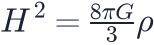
, and solve for the density. For a given expansion rate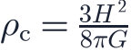
With  km/s/Mpc,
km/s/Mpc,
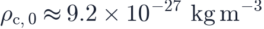
How dense is that? A hydrogen atom has a mass of kg, so the critical density corresponds to about 5.5 hydrogen atoms per cubic metre. The best vacuum made in laboratories still contains millions of molecules per cubic metre. On average, the universe is incredibly empty. |
Density parameters
It is convenient to measure every density in units of the critical density. The density parameter is
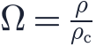
Dividing the Friedmann equation by gives a remarkably simple result:
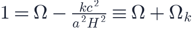
where
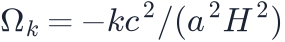
is the curvature parameter. So:| Total density | Curvature | Geometry |
|---|---|---|
| closed | ||
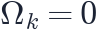 |
flat | |
| open |
Weighing the universe decides its geometry By measuring the total density of the universe and comparing it with the critical density, we learn the geometry of space. Observations find equal to 1 within about 0.2%: the universe is flat, or extremely close to it. |
Several components
The universe contains different ingredients, each with its own density parameter today (subscript 0):
- for radiation (photons and neutrinos),
- for matter (ordinary and dark),
- for dark energy.
Each dilutes differently as the universe expands: matter as  , radiation
as
, radiation
as  and a cosmological constant not at all (you will see why in lesson
L3.1). Curvature behaves like
and a cosmological constant not at all (you will see why in lesson
L3.1). Curvature behaves like
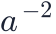
. Putting this into the Friedmann equation gives its most useful form: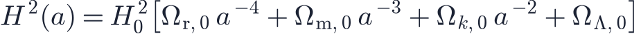
With
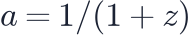
we can compute the expansion rate at any redshift. The bracket is often written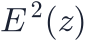
, so that .Today's values The Planck satellite (2018) finds approximately , , 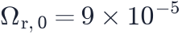 and . |
Try it: Cosmology Calculator Pick the Planck 2018 preset and compare H(z) at different redshifts. How much faster was the universe expanding at z = 1? |
The flatness puzzle
The density parameters themselves change with time. For a matter-dominated universe,
So any small deviation from flatness grows as the universe expands. For to be within 0.2% of 1 today, it must have been equal to 1 to about one part in in the very early universe. Why was the universe tuned so precisely? This flatness problem is one of the motivations for the theory of cosmic inflation, an advanced topic in this course.
Try it: Expansion History Explorer Set Ωm and ΩΛ so their sum differs from 1, and watch the geometry label change. |
Remember this
|